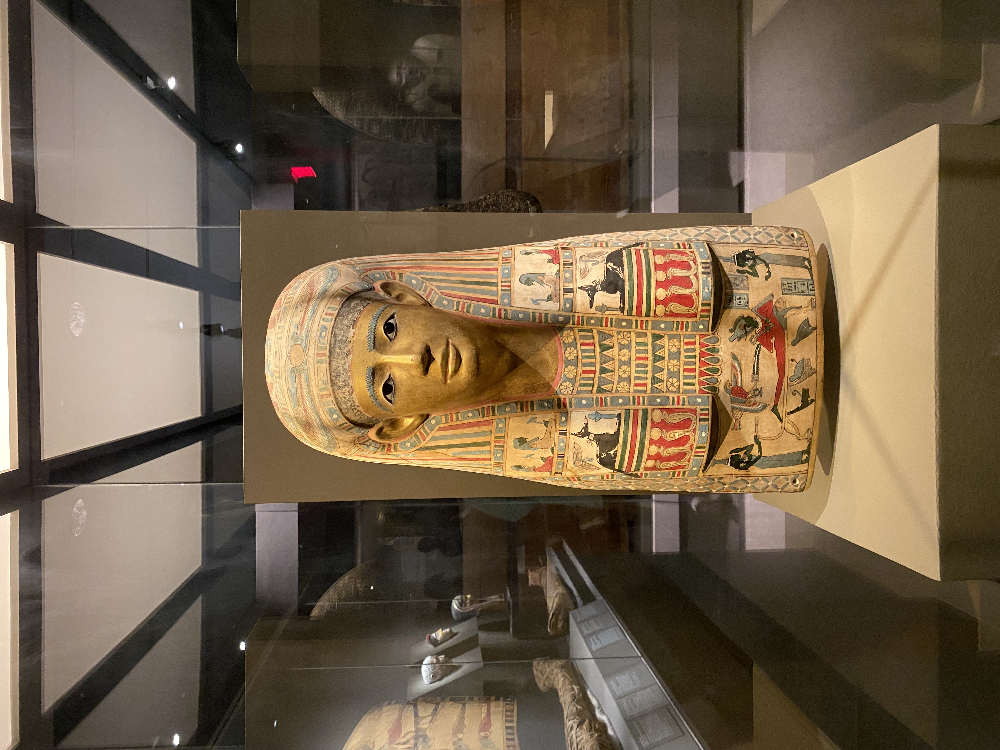
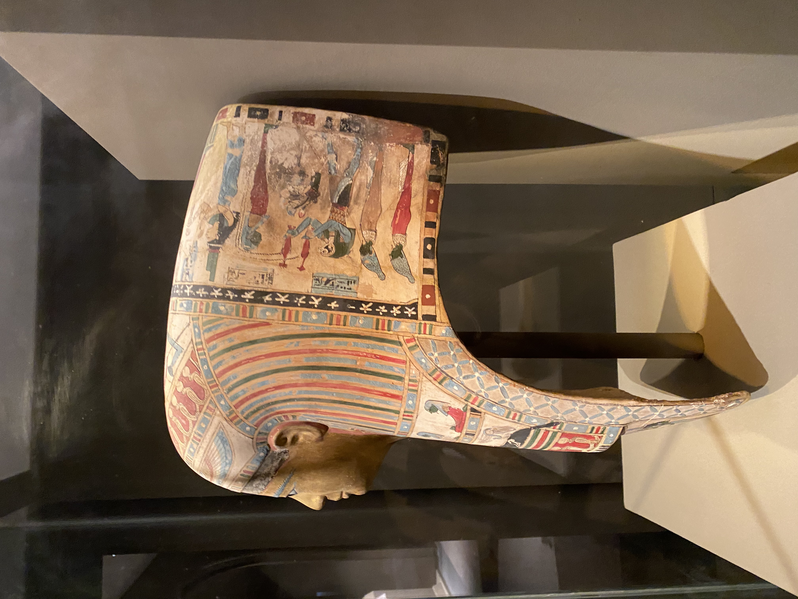
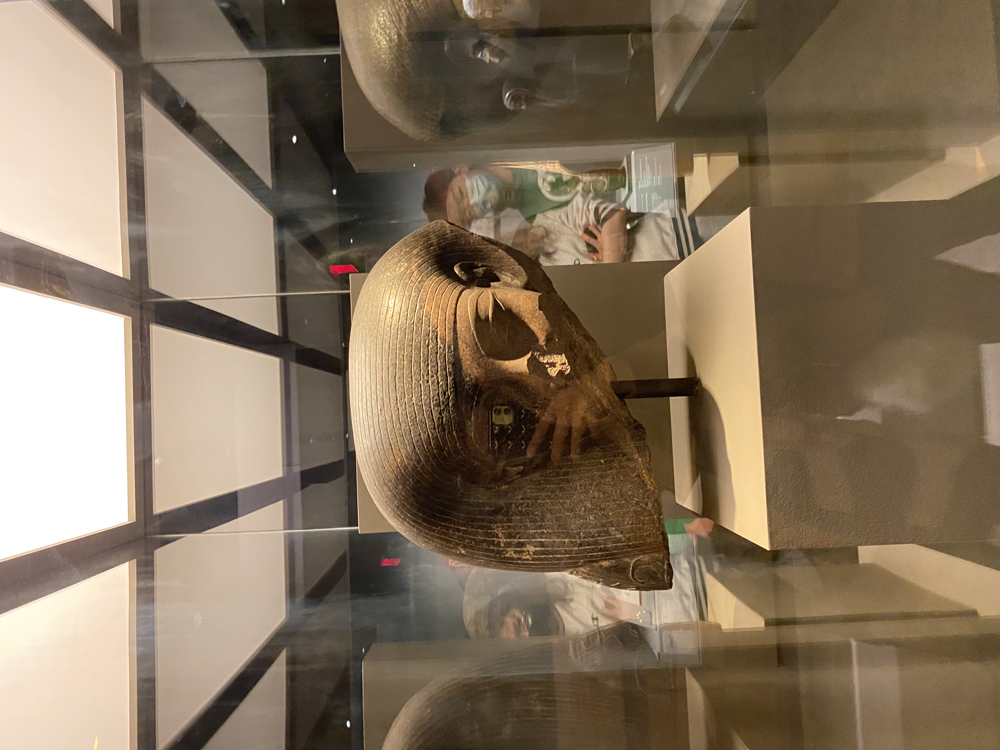
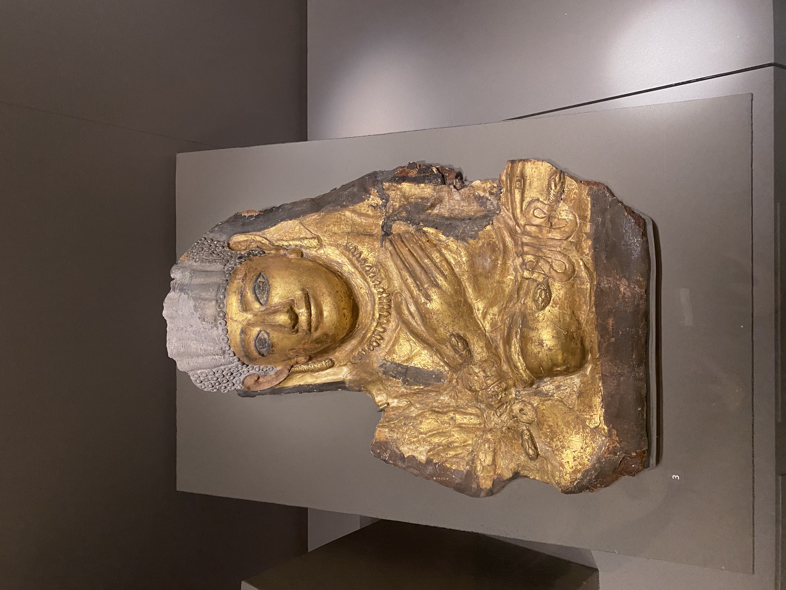
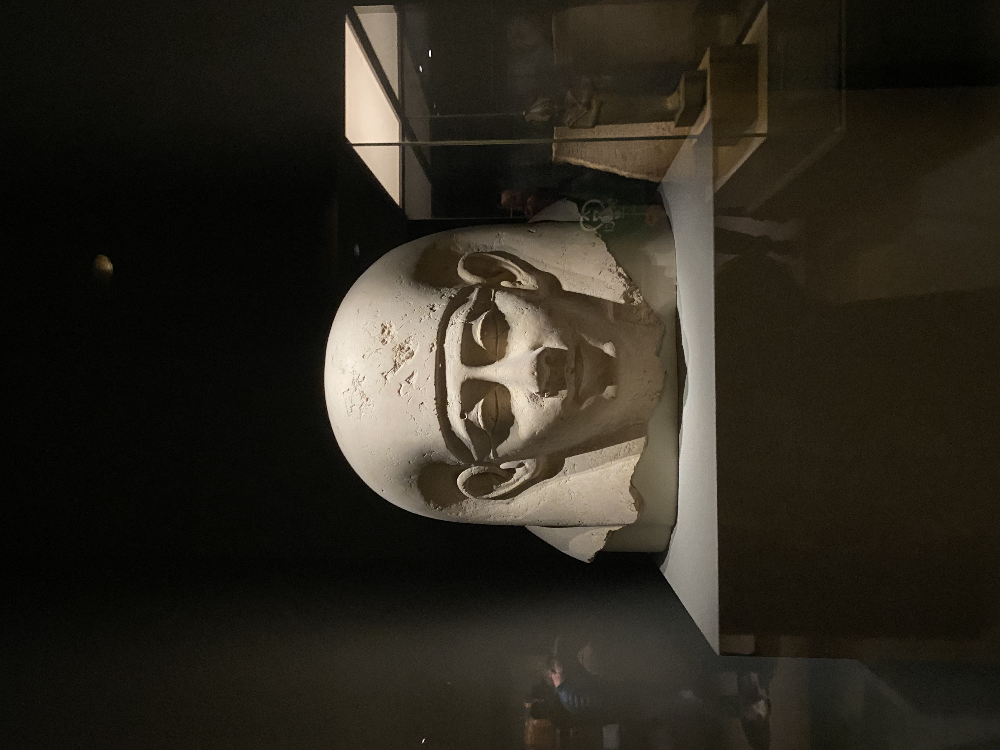
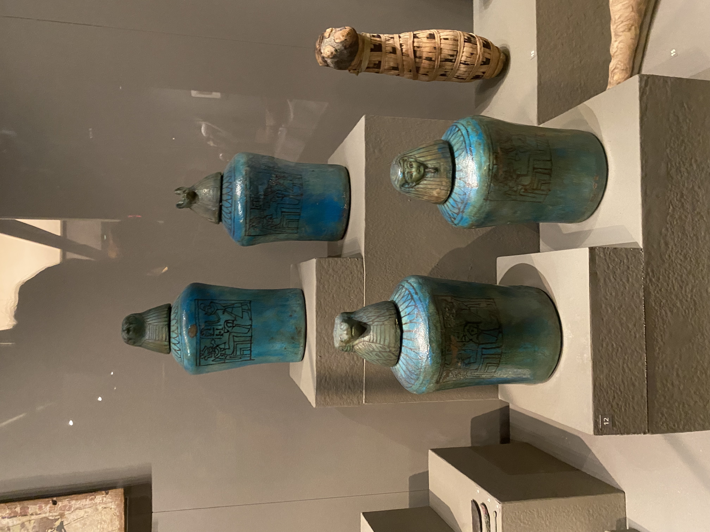
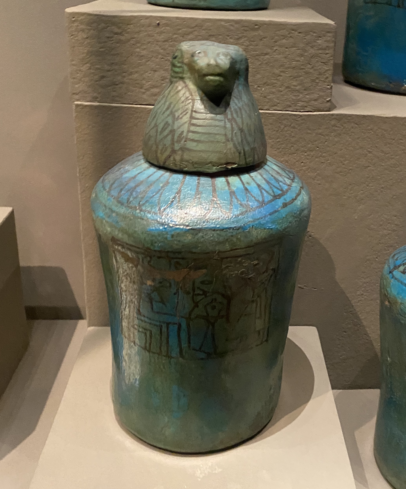

My visit to the Museum of Fine Arts in Boston
During winter break, I had the pleasure of revisiting the Egyptology exhibition at the Museum of Fine Arts in Boston with my boyfriend. Here are some images I have captured.
Funeral Mask of a royal
 This is a beautifully crafted funeral mask of a royal woman, likely a queen or a princess. It is a rare artifact found in a sarcophagus, and is incredibaly well-preserved as you can still see the saturated colors and drawings on its surface.
Sculpture of a godess
This is a part of a sculpture of a goddess. It is likely broken somewhere during the thousands of year after its making. However, this small piece of a larger sculpture still reveals the intricacies and details of the overall sculpture, and is exampliary of the exceptional beauty of assymmetry.
Sculpture of a royal
This is a gold-encrusted sculpture of a goddess. The textures in this sculpture is astonishing. While the face and body of the woman is covered in gold, her hair dress is marble, also carefully sculpted. The makeup around her eyes only accentuate her gaze even more.
Sarcophagus covering of a royal
This is a marble carving at the outter-most layer of a sarcophogus. The marble is a very light beige and embodies great symmetry. The royal man depicted in this carving is smiling, as if glad to enter the paradise of afterlife.
Jars containing a mummy's organs
 These are four jars containing the organs of the mummified individual. Each having a different god as the opening of the jar, these gods protect the different organs of the body.
A Broken Funeral Mask

This is a wooden funeral mask for a female mummy. The broken, shredding wood only adds to its beauty. The unknown Jane Doe is frozen in time forever in a shilling smile.